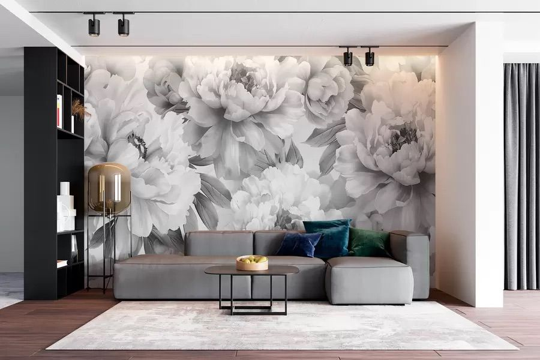
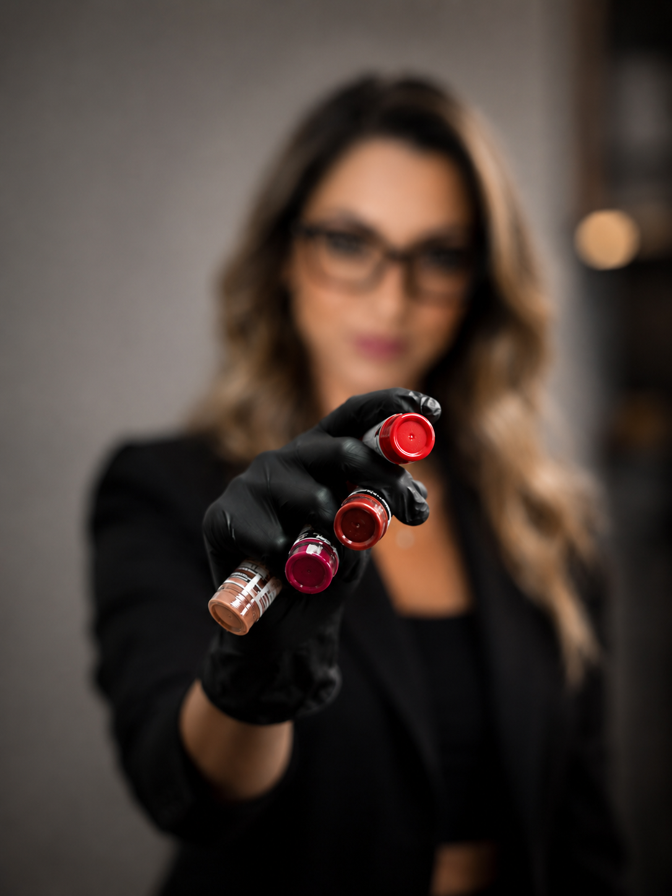

Sminkes & Sminktetováló
Sminktetoválás, alkalmi és menyasszonyi smink Szegeden – természetes hatás, ami hetek helyett évekig tart.
Szia, Szilvia vagyok
Sminkes és sminktetováló – a szakmám lényege nem a feltűnés, hanem a mérték. Egy arcnál a legnehezebb tudni, hol kell megállni; hozzám többnyire épp ezért jönnek. Kevés, biztos vonás, jó ízléssel – rendszerint ennyi az egész.
Minden arc, bőrtónus és igény más, ezért nálam nincs sablon. A munkát mindig közös tervezéssel kezdem, ahol pontosan kialakítjuk a formát és az árnyalatot, ami igazán a te vonásaidhoz illik.
Nyugodt, diszkrét környezetben dolgozom, ahol nyugodtan rám bízhatod magad. Nálam a bizalom és a természetes hatás mindennél fontosabb – hogy elégedetten, magabiztosan lépj ki tőlem.
„A jó sminktetoválást nem veszik észre – csak azt, hogy jól nézel ki.”
Amiben segíthetek
Három terület, egy közös elv: sosem túlzás – mindig te maradsz a főszereplő.
Szemöldök:
Soft Powder (lágy satír) és Hard Powder (erős satír).
Szemhéj:
szempillatő-sűrítés, tusvonal és ombre tusvonal.
Ajak:
teljes satír – dús, egészséges színű ajkak.
Segítek megszabadulni a megfakult vagy elszíneződött régi tetoválástól – biztonságos lézerrel halványítjuk vagy távolítjuk el, hogy tiszta lappal indulhassunk. Az alkalmak számát és az árat a konzultáción egyeztetjük.
Nappali, alkalmi, próba és menyasszonyi smink – a hétköznaptól a legnagyobb napodig, mindig az alkalomra hangolva.
Konzultáció
Minden kezelést ingyenes konzultáció előz meg: formatervezés, színválasztás és válasz minden kérdésedre.
Gyógyulás
A teljes gyógyulás 4–6 hét. A friss tetoválás sötétebb – a végleges, lágy árnyalat ezután alakul ki.
Kontroll
6–8 hét múlva kontrollalkalom, ahol tökéletesítjük a végeredményt – ez a kezelés része.
Prémium eszközök, biztonságos kezelés
Minden tűt és fejet bontatlan, egyszer használatos csomagból nyitok ki előtted. Bevizsgált, bőrbarát pigmentekkel dolgozom, amelyek idővel sem szürkülnek vagy színeződnek el – ettől lesz a hatás tartós, és ettől éri meg az ár.
Professzionális ecsetek
Teljes, kézzel válogatott ecsetkészlet – a nappalitól a menyasszonyi sminkig.
Milliméter-pontos tervezés
Szemöldökkefék és precíziós ecsetek az előrajzoláshoz – a forma előbb készül el, mint hogy a tű a bőrhöz érne.

Bőrbarát pigmentek
Bevizsgált, természetes árnyalatok, amelyek idővel sem szürkülnek vagy színeződnek el.
Kezelések és áraik
Lágy, púderes árnyalás – természetes, finoman formázott szemöldök.
Karakteresebb satír – hangsúlyosabb, tartósan sminkelt hatás.
Finom sűrítősor a pillák tövében – dúsabb tekintet.
Klasszikus tusvonal, ami nem kenődik el.
Lágyan elmosódó, árnyékolt tusvonal.
Egységes tónus és határozott kontúr.
Minden kategóriára érvényes, a kezelést követő 3 hónapon belül.
A korábbi tetoválás színének és formájának felújítása kedvezménnyel.
Ha valamivel több idő telt el, akkor is kedvezménnyel frissítünk.
Nem általam készített sminktetoválás korrekciója.
Természetes, hétköznapi smink.
Rendezvényre, ünnepi alkalomra.
Az esküvő vagy nagy alkalom előtti kipróbálás.
A legszebb napodra – tartós, fotóálló smink.
Az ár az adott munka méretétől és állapotától függ.
Az árban benne van az ingyenes konzultáció és a 6–8 hetes kontroll is. A pontos árat mindig a konzultáción egyeztetjük.
Ízelítő a munkáimból
Amit sokan kérdeznek
Fáj a sminktetoválás?
Érzéstelenítő krémmel dolgozom, ezért a legtöbben enyhe, jól tolerálható érzésként élik meg. Végig figyelek a kényelmedre, és bármikor tarthatunk szünetet.
Mennyi ideig tart egy kezelés?
Területtől függően általában 1,5–2,5 óra, a konzultációval és a gondos formatervezéssel együtt. Nálam nincs kapkodás – a precíz munka időt igényel.
Meddig marad meg?
Bőrtípustól, életmódtól és napozási szokásoktól függően jellemzően 1–3 évig. A frissítés felújítja a színt és a formát, így tovább szép marad.
Kinek nem ajánlott?
Nem javasolt várandósság vagy szoptatás idején, kezeletlen cukorbetegség, valamint bőrgyógyászati vagy véralvadási probléma esetén. Kétség esetén kérd ki kezelőorvosod véleményét – az első beszélgetésen minden fontos kérdést átbeszélünk.
Hogyan zajlik a gyógyulás?
A friss munka az első napokban sötétebb és intenzívebb, majd kb. 4–6 hét alatt halványul a végleges, lágy árnyalatra. 6–8 hét múlva kontrollra várlak, és részletes utókezelési tájékoztatót is adok.
Kezdjük egy beszélgetéssel
Az első lépés egy ingyenes, kötetlen konzultáció – együtt megtervezzük a formát és a színt, és átbeszélünk minden kérdést. Semmire nem kötelez. Ha belevágunk, az időpontot 20% előleggel rögzítjük, a pontos időpontról pedig SMS-t is küldök. Az online naptár hamarosan itt lesz – addig hívj bizalommal.
06 30 541 5415